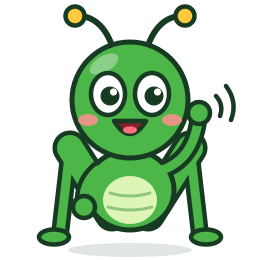
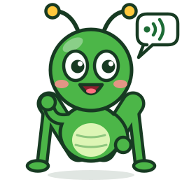
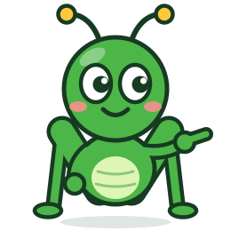

Nenhum dos três tem a barra lateral, os ícones ou os formulários do AsTeRICS Grid. Cada caminho mostra três telas no tablet: a entrada, o lugar do adulto e a prancha do Cadu. Os desenhos dos botões são só exemplo; no app real continuam as figuras do ARASAAC e as fotos da família.
O app abre perguntando "Quem vai falar hoje?", com o rosto de cada criança. Depois vem uma tela inicial com cartões grandes, sem menu escondido: Falar, Frases, Pranchas, Ajustes. Na prancha, a frase fica num balão no alto e os botões de apoio ficam embaixo. Visual quente: creme, verde-folha e amarelo-girassol.

Entrada: escolher a criança pelo rosto
Início do adulto: cartões grandes, tudo à vista
Prancha: a frase num balão, apoio embaixo
O app abre direto na prancha, que ocupa a tela inteira; a criança nunca vê menus. O adulto segura o botão "Responsável" e sobe um painel com tudo: editar, frases, fotos, ajustes. Visual limpo e moderno: branco, verde-petróleo e coral. Entrar com conta vira uma tela dividida, com os rótulos em cima dos campos.

Toda criança tem algo a dizer.Comunicação alternativa grátis, que funciona sem internet.Entrada: tela dividida, rótulos em cima dos campos
Prancha em tela cheia; menus só para o adulto
Painel do responsável: sobe por cima da prancha
O app parece um caderno de figurinhas: botões com contorno grosso e "sombra" de papel, abas no alto em vez de menu lateral, e o grilo conversando com o adulto em balõezinhos para explicar cada passo. As palavras escolhidas viram figurinhas coladas na faixa da frase. É o caminho mais lúdico e o mais diferente de qualquer app de CAA.

Entrada: o grilo guia passo a passo
Lugar do adulto: abas no alto, pranchas como cartões
Prancha: palavras viram figurinhas coladas na frase